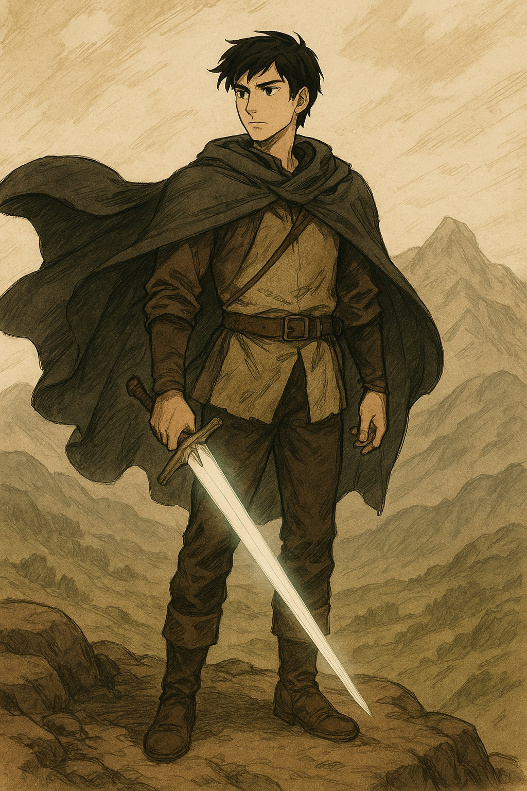
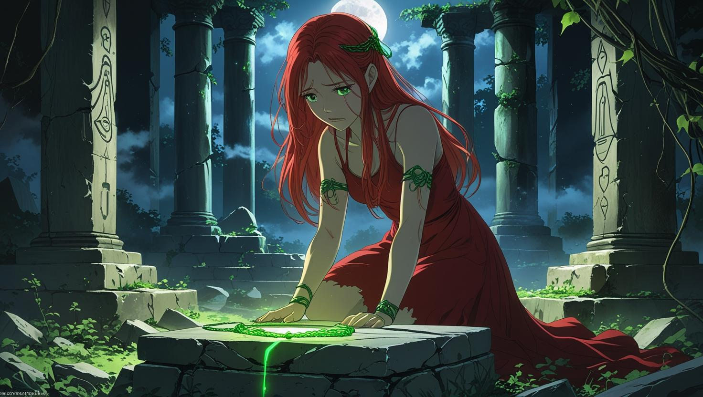
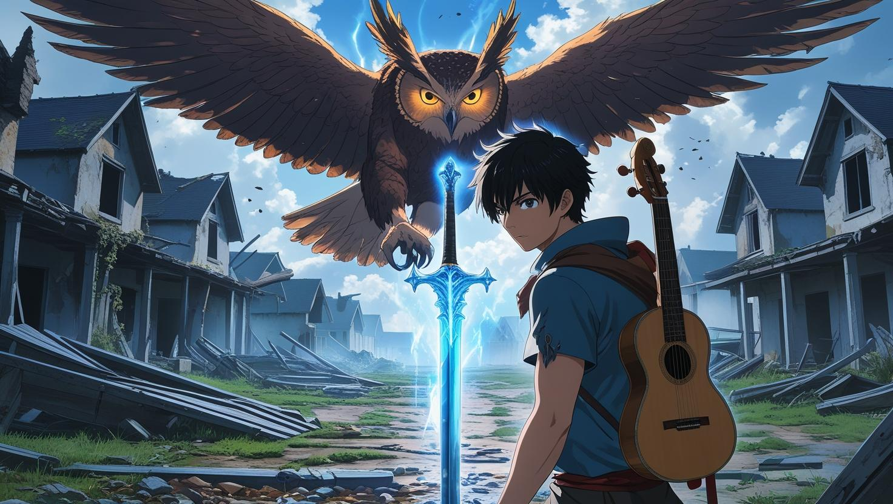
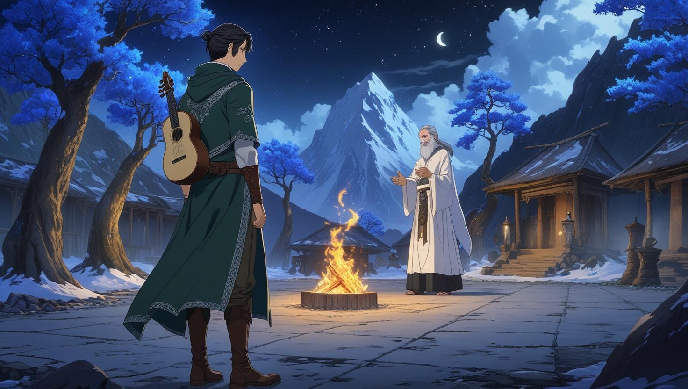

Saisha y Eiran
Capítulo 1: El despertar
Saisha: Renacer entre olas
Vaga por el mundo buscando respuestas, preguntándose si existe alguna forma de romper la maldición que la consume lentamente. Aunque a menudo parece una aliada confiable y llena de sabiduría, nadie sabe si esa será la última vez que use su magia. Cada vez que sobrepasa el límite de su poder, un nuevo mechón dorado aparece… y con él, la posibilidad de morir.
Su objetivo es encontrar la verdad detrás de su habilidad. Tal vez una cura. Tal vez una aceptación. O quizá… enfrentarse de una vez por todas a su destino.
Un día, emprende un viaje que la obliga a cruzar el mar. Tras varios días a bordo, una noche la calma se rompió.
Las olas golpeaban el casco del barco como si el océano quisiera devorarlo entero. Saisha, de pie sobre la cubierta, sentía cómo la tormenta rugía con furia ancestral. Los relámpagos rasgaban el cielo mientras los marineros gritaban órdenes que el viento desgarraba antes de que pudieran cumplirse. Sabía que el viaje era peligroso, pero jamás imaginó que el mar la reclamaría tan pronto.
Un rayo partió el mástil en dos. El caos fue inmediato. El barco crujió, gimió como un gigante herido, y comenzó a hundirse. Saisha, atrapada entre los restos y la fuerza del mar, sintió cómo su cuerpo era arrastrado hacia las profundidades. El frío la envolvió. El aire la abandonó. Y, cuando sus ojos se cerraron, lo último que vio fue el tenue resplandor de sus mechones dorados… brillando, envolviéndola, como si su propia magia intentara protegerla.
Y luego… oscuridad.
Cuando despertó, el sol acariciaba su piel con suavidad. Estaba tendida sobre la arena de una playa desconocida, rodeada por restos del naufragio. Su vestido estaba rasgado, pero seco. Su cuerpo, intacto. Sin heridas. Sin cicatrices. Como si el mar nunca la hubiera tocado.
Se incorporó lentamente, con la respiración contenida. Su mirada cayó sobre su cabello, y lo que vio la dejó sin aliento: algunos mechones dorados seguían allí… pero otros habían mutado a un tono plateado, brillante como la luna sobre el agua.
—¿Qué significa esto…? —susurró.
El cambio no era solo físico. Sentía una energía distinta recorriéndole el cuerpo, como si algo dentro de ella hubiera despertado… o renacido. Las reglas de su poder habían cambiado. Y con ellas, su destino.
¿Había muerto realmente? ¿Fue salvada por su magia? ¿O había algo más, algo antiguo y desconocido, que la tocó en las profundidades?
Una cosa era segura: Saisha ya no era la misma. Y su viaje… apenas comenzaba.
El despertar del poder plateado
Observó los mechones plateados que caían entre su cabello negro y dorado. Su instinto le decía que ese nuevo cambio no era un simple efecto secundario… era una evolución.
Poco a poco, descubrió que el cabello plateado le otorgaba el don de la curación. Podía cerrar heridas, aliviar el dolor, incluso regenerar tejido si concentraba su energía. Sin embargo, como todo en su vida, había un precio: si su cabello se tornaba completamente plateado… también moriría.
Pero entonces comprendió algo crucial: el plateado podía sustituir al dorado. Si antes el uso de ilusiones aceleraba su muerte, ahora, al usar su magia de sanación, podía equilibrar el avance del dorado. No era una cura definitiva, pero sí un nuevo tipo de esperanza. Mientras mantuviera un mínimo de su color natural, mientras ambos poderes coexistieran, aún había una oportunidad.
Con renovada fuerza, retomó su camino.
No como la misma Saisha que se había embarcado… sino como alguien que había desafiado a la muerte… y ganado algo a cambio.
Capítulo 2: El encuentro con la aldea
Tras días de caminar por un bosque cubierto de neblina, Saisha llegó a una aldea escondida entre las montañas. El aire era espeso y húmedo; la tierra olía a hojas mojadas, fuego de leña y tiempo detenido. Pero lo que más la impactó no fue el paisaje, sino la reacción de quienes la vieron.
Los aldeanos se quedaron inmóviles. Algunos dejaron caer lo que tenían en las manos, otros se arrodillaron. Un murmullo reverente se propagó como un eco contenido por siglos. Un anciano, encorvado por los años, se acercó con lágrimas en los ojos y la voz temblorosa.
—Zahla’ven, Sa-Reth… Sacerdotisa... —susurró en una lengua que el viento parecía reconocer.
Saisha parpadeó, confundida.
—¿Sacerdotisa?
La condujeron al centro del pueblo, donde se alzaba un templo cubierto de musgo, enredaderas y piedra antigua. Las paredes estaban grabadas con tallas que narraban una historia olvidada: una mujer de ojos dorados y cabello dividido en tres colores… negro, dorado y plateado.
Era ella.
O alguien como ella. Una reencarnación. Un presagio. El eco de un equilibrio ancestral entre ilusión, curación… y muerte.
En ese instante, Saisha comprendió que su renacer en el mar no fue un accidente ni un milagro. Fue un llamado. El verdadero inicio de su destino.
El Pacto del Collar Esmeralda
Al cruzar el umbral del templo, el aire cambió. Era más denso, más antiguo, como si el tiempo allí se tomara su propio ritmo. En el centro, sobre un pedestal de piedra cubierto por raíces milenarias, reposaba un collar con una esmeralda central, brillante y viva, como si respirara. Al mirarla fijamente, Saisha vio estrellas azules danzando en su interior, como si encerrara un cielo propio.
Los aldeanos la rodearon en profundo silencio, aguardando.
—Ese es el Collar de Ahnesha, el legado de la Primera Sacerdotisa —dijo el anciano—. Se dice que quien lo porta recibe visiones... respuestas. Pero también una elección.
Saisha sintió cómo su corazón latía con fuerza. Ese collar la llamaba. Estaba vinculado a ella.
Cuando lo tocó, un susurro se deslizó en su mente como un canto que conocía sin haberlo escuchado jamás:
—"Si portas el collar durante veinte años, el dragón dormirá cien... pero tu vida quedará atada a esta aldea."
Era la voz de Ahnesha. Su espíritu vivía en el collar, custodio del pacto.
Saisha frunció el ceño. ¿Proteger una aldea que acababa de conocer durante dos décadas? ¿Renunciar a su búsqueda? ¿A su libertad?
—Quiero respuestas. Quiero vivir. No quiero quedarme atrapada aquí. —respondió, sin titubeos.
El espíritu no se mostró sorprendido. Su voz se volvió más clara, más firme:
—Entonces solo queda una opción: debes enfrentar al dragón. Y vencerlo. Pero no lo lograrás sola.
Necesitarás la ayuda del Guerrero del Cielo. Solo él puede contener la furia del dragón el tiempo suficiente para que tú puedas sellarlo... o destruirlo.
Un escalofrío recorrió el cuerpo de Saisha. El camino que había evitado era ahora inevitable. Su destino no era solo sobrevivir. Era romper el ciclo.
Nueva misión: Encontrar al Guerrero del Cielo
El espíritu le mostró una visión: un cielo tormentoso sobre un desierto de dunas infinitas, y en medio de la nada, una figura solitaria caminando con una lanza que brillaba como un rayo sostenido por manos humanas.
—Él aún no sabe quién es. Pero tú lo despertarás. —dijo Ahnesha.
Saisha tomó el collar con decisión. Sintió su energía fundirse con la suya, y en ese instante, un nuevo mechón de su cabello se tornó verde esmeralda: símbolo de que ahora llevaba en sí parte del poder de Ahnesha… y también su promesa.
Se volvió hacia la aldea. Sus ojos ardían con determinación.
—Volveré. Pero primero… encontraré al Guerrero del Cielo.
Y así, con su cabello ya teñido de negro, dorado, plateado y esmeralda, Saisha descendió por el camino serpenteante de la montaña. A su paso, los aldeanos la miraban partir con esperanza. Sabían que, aunque no lo entendiera del todo, ella era su único vínculo con el equilibrio perdido.
Lo que no sabían… era que el dragón también había comenzado a despertar.
Capítulo 3: El Tiempo del Dragón
La razón por la que el dragón no había despertado aún era clara: habían pasado 80 años desde que la última sacerdotisa logró mantenerlo dormido con su presencia. Si nadie ocupaba su lugar, en solo veinte años, el dragón abriría los ojos… y con él, el volcán que yacía en las entrañas de la montaña estallaría, arrasando la aldea y todo lo que la rodeaba.
El vínculo con la sacerdotisa —anclado a la tierra, al templo y al Collar Esmeralda— era el único sello que mantenía al dragón sumido en un sueño profundo. Un equilibrio frágil. Si Saisha pisaba su cueva, incluso por accidente, su mera existencia bastaría para despertar a la bestia.
Por eso, el espíritu de Ahnesha fue tajante: quedarse era la única forma de evitar una catástrofe… o encontrar al dragón y enfrentarlo antes de que el tiempo se agotara.
El Guerrero del Cielo

Mientras tanto, al otro lado de las montañas, en un reino donde la riqueza ocultaba cicatrices antiguas, vivía Eiran, cuyo nombre significaba el mundo en sus hombros.
Hijo de una familia poderosa, destinado a casarse con una princesa que jamás había conocido, Eiran parecía tenerlo todo. Dominaba la espada como si hubiera nacido con ella en las manos, pero su verdadera pasión se revelaba en secreto: melodías melancólicas compuestas a la luz de las velas, historias escritas en pergaminos que solo él leía, palabras que lo alejaban de la realidad que lo rodeaba.
Era admirado, sí. Intrigante, sin duda. Pero su carácter obstinado y su alma inquieta lo hacían inalcanzable. Las damas del reino lo miraban como quien observa una estrella lejana: hermosa, pero imposible de tocar.
Eiran no quería un trono. No quería un destino escrito por otros. Soñaba con montañas desconocidas, mares infinitos y respuestas enterradas bajo siglos de silencio.
Y justo cuando pensó que estaba condenado a la jaula dorada que lo contenía… ella apareció en sus visiones.
El Llamado de las Estrellas
Desde el momento en que Saisha colocó el collar esmeralda alrededor de su cuello, comenzó a tener sueños que no eran suyos.
No eran simples imágenes: eran recuerdos vividos. Sentía el roce de páginas antiguas, escuchaba liras susurrando canciones tristes, leía poemas escritos con tinta fresca bajo una luna enorme y silenciosa.
Eiran. No sabía su nombre aún, pero conocía su alma. Compartían una herida invisible: ambos eran prisioneros de las decisiones de otros. Ambos deseaban romper las cadenas que los mantenían atados.
Y al otro lado del mundo, Eiran comenzó a soñar con una mujer envuelta en verdes intensos, de cabello cambiante, con ojos como fuego atrapado en ámbar, y un aura que mezclaba todas las estaciones del año en un solo aliento. Al principio pensó que era una visión de su mente… hasta que escuchó su voz.
—¿Me estás escuchando? —susurraba ella entre sueños.
Él no respondía. No aún. Pero algo dentro de él sí lo hacía.
El destino comienza a girar
Una noche, mientras Eiran tocaba una melodía en su habitación, sus padres irrumpieron con sonrisas que traían el sabor amargo de las decisiones impuestas:
—Hijo, ha llegado el momento. La princesa del Reino del Alba cruzará las montañas. El compromiso será anunciado en la próxima luna llena.
Eiran bajó la mirada. Las notas cesaron. Sintió cómo algo dentro de él se rompía… justo cuando una ráfaga de viento abrió la ventana, trayendo consigo un susurro:
—Ven. Yo también estoy atrapada… pero sé cómo escapar.
Esa misma noche, sin mirar atrás, Eiran dejó el palacio con su laud, su capa sobre los hombros… y la música apagada, pero no olvidada.
La colisión de destinos
Ambos avanzan ahora por caminos distintos, guiados por la misma energía, atraídos por un lazo que aún no comprenden del todo. Sus pasos los llevan uno hacia el otro, sin saber que su encuentro no solo decidirá el destino del dragón… sino también el de sus propias vidas.
Porque hay algo que el espíritu del collar aún no le ha dicho a Saisha…
Si el dragón muere… uno de ellos también lo hará.
Capítulo 4: El Llamado del Fuego
En su viaje hacia el este, Saisha llegó a una aldea silenciosa, casi fantasmal. No había risas, no había juegos. Solo susurros, puertas entreabiertas y miradas apagadas.
Los niños estaban muriendo.
Una extraña enfermedad los consumía lentamente, como si su propia energía se deshilachara día tras día. Nada los curaba. Ni las hierbas, ni los rezos, ni los hechiceros del valle. Solo impotencia. Solo llanto.
Entonces, el collar de Saisha ardió.
Literalmente. El verde esmeralda se tiñó de rojo encendido, y una llama suave lo rodeó sin quemarla. La temperatura a su alrededor se elevó, y una nueva voz se encendió en su mente.
—Soy Yara, la Tercera Sacerdotisa. Portadora del Fuego Bendito.
Saisha sintió la fuerza, el calor… y la voluntad férrea de aquella mujer. Yara no había nacido para ser sacerdotisa, pero eligió el collar. Eligió quedarse. Eligió luchar.
—Esto no es una enfermedad. Es una maldición. Y solo el fuego que bendice —no el que destruye— puede eliminarla. Déjame guiarte, Saisha. Usa mi llama. Usa tu compasión.
Saisha cerró los ojos y permitió que el fuego fluyera.
Sus manos comenzaron a brillar con una llama roja suave, casi líquida, que palpitaba como un corazón. Al tocarlos, los niños no ardían... sanaban. Sus cuerpos se relajaban, sus respiraciones se normalizaban, y uno por uno, abrían los ojos como si despertaran de una pesadilla.
Cuando el último niño fue tocado por la llama, Saisha cayó de rodillas, exhausta.
Y entonces, lo notó.
Sus mechones dorados y plateados… se habían vuelto rojos.
El Precio del Fuego
Pero no era todo celebración. El espíritu del fuego le habló de nuevo.
—Este fuego es puro, pero no es parte del equilibrio. No lo sustituye. Solo lo retrasa. Has salvado vidas, pero no has roto tu destino.
El rojo no reemplazaba ni al dorado ni al plateado. Era una tercera vía. Un poder prestado. Temporal.
Útil, sí. Pero también una advertencia: cada don tiene un precio. Y ese precio se acerca más rápido de lo que parece.

Fuego Heredado
Esa noche, Saisha apenas pudo dormir. El calor que recorría su cuerpo no era fiebre. Los mechones rojos en su cabello brillaban como llamas: una llama ancestral, una memoria ardiendo desde adentro.
La primera visión llegó sin aviso, como un recuerdo que no era suyo… pero que la habitaba.
Era un día soleado. Estaba en la aldea donde encontró el collar. Había una boda, flores rojas decoraban los caminos, la música sonaba viva, alegre. Entre la gente danzante destacaba una joven de cabello rojo suelto, ojos brillantes y una risa que contagiaba esperanza: Yara. La misma voz que ahora susurra desde el collar.
Saisha no solo observaba. Estaba dentro de ella. Sentía su dicha, la calidez del amor, el futuro palpitando en sus manos…
Hasta que la tierra tembló.
Un rugido partió el suelo, y parte del templo se vino abajo.
—El dragón… —murmuraron los ancianos.
Ese fue el primer presagio. La señal del inicio de la desgracia.
Y del silencio.
La visión cambió.
Había pasado tiempo desde aquella boda. Aunque la aldea parecía en calma, una sombra latente se cernía sobre todos: el dragón dormía... y no había una sacerdotisa para contenerlo. Las advertencias estaban ahí, pero la vida siguió como si no.
En otro fragmento de la visión, Yara vivía una felicidad completa. Había tenido gemelos: dos hijos hermosos. Pero un día, sin aviso, ambos enfermaron.
Y no solo ellos,todos los niños de la aldea comenzaron a caer también. Una fiebre extraña, sin nombre ni cura, se extendía como una maldición viva.
Los curanderos no hallaban remedio. Ninguna medicina funcionaba.
Uno de los gemelos murió. El otro agonizaba. Y cada día, una nueva familia se preparaba para despedirse.
El pueblo se rindió. Hablaban de abandonar la aldea, sus tierras, su historia. Pero en medio del dolor, algo se encendió dentro de Yara. Siempre había estado ahí, una llama que ahora ardía con fuerza.
Ella no iba a huir. Quería salvar a su hijo. A todos.
Como si escuchara una melodía antigua, sus pasos la guiaron al templo. Allí estaba el collar, y en los murales, las dos sacerdotisas anteriores.
Lloró. Gritó. Suplicó.
Y entonces… el collar respondió.
Lo vio tal como Saisha lo encontraría generaciones después: brillando en la penumbra, como un faro en ruinas. Una esperanza aferrada al olvido.
Cuando Yara lo tomó, un viento cálido recorrió la aldea. La naturaleza pareció respirar aliviada.
—¡La sacerdotisa ha despertado! —gritó el viento.
Al salir del templo, su cabello rojo lucía un nuevo mechón verde esmeralda: el color de la vida. Sabía que el poder de la sacerdotisa ahora vivía en ella.
Sanó a su hijo. Sanó a todos los niños de la aldea.
La enfermedad—esa maldición—se desvaneció como si nunca hubiera estado.
Gracias al poder de su fuego.
Con el tiempo, su cabello fue tornándose plateado: el color de la cura.
Se dice que el hijo que sobrevivió crecería para convertirse en jefe de la aldea… y su nieto, hoy, es quien la lidera.
Y cuando Saisha despertó…
supo que no había sido solo una visión.
Era un llamado.
Capítulo 5: El Despertar de la Espada del Destino

Eiran había escapado del palacio, de su nombre, de su destino como esposo de una princesa a la que ni siquiera conocía. Solo quería tocar música, ver el mundo... ser libre.
Con su laúd a la espalda y una sonrisa descarada, se unió a una banda de músicos ambulantes. Su vida era perfecta… hasta que llegaron a aquella aldea.
Los músicos no quisieron quedarse esa noche. Los aldeanos les advirtieron de un monstruo alado que tenía a todos aterrorizados. Las casas estaban vacías, los campos sin sembrar, la esperanza… suspendida.
Pero Eiran no se sintió intimidado. Algo dentro de él lo empujaba a quedarse, como si aquel lugar le susurrara un secreto que solo él podía oír.
Caminó solo hasta llegar al templo en ruinas. Y entonces, una voz resonó en su mente:
—¡La espada que predice el destino incierto ha despertado!
Sintió un tirón en el pecho. Nadie más parecía escucharla. Los pocos aldeanos que aún vivían allí y sus compañeros intentaron disuadirlo, rogándole que buscara refugio. Pero Eiran no podía apartarse del templo. Era como si una melodía invisible lo guiara.
La noche cayó. Justo cuando Eiran estaba por cruzar el umbral del templo, el monstruo apareció.
Un ser híbrido, con pico de búho, garras de águila, alas enormes como nubes de tormenta y ojos encendidos como brasas. Los aldeanos solo oyeron un rugido. Pero Eiran… escuchó palabras:
—Tú eres por quien fui creado… ¡y aun así no debes tomarla! La espada te ha estado esperando, pero la desesperación de la humanidad me dio forma. Si la espada vive, yo muero.
El rugido fue ensordecedor. Eiran intentó escapar, pero la criatura lo golpeó con una de sus alas y lo lanzó por los aires. Cayó justo frente a la espada.
Una espada simple, de apariencia de madera, sin brillo ni ornamentos. Vacía.
—¿Esto es? ¿Esto es todo? —murmuró Eiran, decepcionado.
Pero entonces, la espada lo eligió. La tomó. Y con su primer movimiento, cortó el viento… y también al monstruo.
La criatura chilló, retrocediendo. Eiran estaba herido. Su sangre goteó sobre la empuñadura, y en ese instante, la espada absorbió su esencia. Estalló en luz. Las astillas volaron, revelando una hoja resplandeciente, forjada por el destino y la voluntad. Una espada que no buscaba gloria, sino un corazón decidido.
Con un segundo golpe, la criatura cayó. Derrotada.
Y con ella, algo dentro de Eiran también despertó.
La aldea, como si un manto oscuro hubiera sido retirado, recuperó la luz. Los aldeanos no podían creerlo: por fin eran libres de aquella pesadilla. Los músicos partieron sin Eiran… quien decidió quedarse un tiempo en ese lugar.
La Visión
Mientras el pueblo celebraba, Eiran estaba sentado con el líder de la aldea, tocando su laúd bajo la luz de una fogata. Entonces, lo vio.
Primero fueron colores danzantes… luego, una imagen nítida.
Un bosque de verdes profundos.
Cabello negro como la noche.
Ojos dorados como soles dormidos.
Una mujer envuelta en magia.
No sabía quién era.
Pero supo algo con certeza:
—Tengo que encontrarla.
A la mañana siguiente, empacó su laúd, enfundó la espada y se despidió de la aldea.
—Mi canción ahora sigue otra melodía.
Susurros de una Sacerdotisa
Varios días después, Eiran llegó a Viraen, una aldea oculta entre montañas, donde los árboles tenían hojas azules por una extraña savia que brillaba con la luna.
Solo pensaba descansar… hasta que escuchó un canto surgiendo del agua de la fuente central.
—¡Que la sacerdotisa nos mire desde su camino! ¡Que su cabello arda como la esperanza!
Un anciano recitaba los versos con voz temblorosa. La fuente replicaba cada palabra, como si cantara con él. Eiran, maravillado, se acercó. Nunca había oído música en el agua.
—¿Sacerdotisa? —preguntó con la voz en vilo.
El anciano lo miró como si hubiera invocado una leyenda.
—Dicen que una mujer de ojos dorados y cabello como la noche, tocado por la luz del cielo y el fuego, ha despertado el collar de las cinco guardianas… Que camina entre aldeas, curando maldiciones y enfrentando su destino.
El corazón de Eiran dio un salto. ¿Era ella? ¿La de su visión?
¿Cabello tocado por el cielo y el fuego?
No entendía por qué, pero sabía que debía encontrarla.
Su espada, colgada a su espalda, comenzó a vibrar levemente. Como si reconociera el nombre que él aún no se atrevía a pronunciar:
Saisha.

Anterior
Siguiente